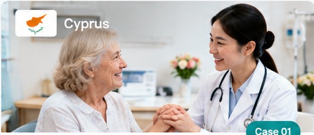

72-year-old patient
Received treatment for cervical spondylosis, including pre-operative TCM acupuncture, surgery and post-operative rehabilitation, with coordinated nursing, accommodation, meals and interpretation support.
TCM AcupunctureSurgeryRehabilitationDedicated Support